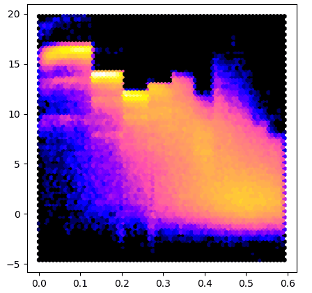
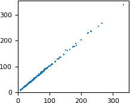
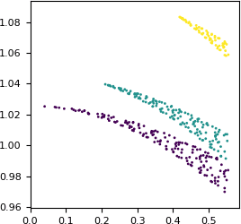
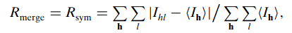
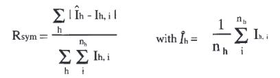

Reciprocal space¶
This section is primarily for people working with crystallographic data.
Gemmi supports four reflection file formats:
MTZ files – the most popular format in macromolecular crystallography,
structure factor mmCIF files – used for data archiving in the Protein Data Bank,
XDS ASCII format – data from processing images with XDS,
and small molecule structure factor CIF files (usually with extension hkl).
Reflection files store Miller indices (hkl) with various associated numbers. Initially, the numbers represent observations derived from diffraction images (reflection intensities and error estimates). Then other quantities derived from these are added, as well as quantities derived from a macromolecular model that is built to explain the experimental data. Even electron density maps, which are used in the real space, are nowadays stored mostly as map coefficients in reflection files. Molecular viewers Fourier-transform them on the fly.
MTZ format¶
MTZ format has textual headers and a binary data table, where all numbers
are stored in a 32-bit floating point format.
The headers, as well as data, are stored in class Mtz.
We have two types of MTZ files:
merged – single record per (hkl) reflection
unmerged – multi-record
In merged files the columns of data are grouped hierarchically
(Project -> Crystal -> Dataset -> Column).
Normally, the column name is all that is needed; the hierarchy can be ignored.
In Gemmi, the hierarchy is flattened:
we have a list of columns and a list of datasets.
Each columns is associated with one dataset, and each dataset has properties
dataset_name, project_name and crystal_name,
which is enough to reconstruct the tree-like hierarchy if needed.
In unmerged files it is records, not columns, that are the associated with datasets. The BATCH column links records to batches (~ diffraction images). The batch header, in turn, stores dataset ID.
Reading¶
In C++, the MTZ file can be read using either stand-alone functions:
Mtz read_mtz_file(const std::string& path)
template<typename Input> Mtz read_mtz(Input&& input, bool with_data)
or member functions of the Mtz class, when more control over the reading process is needed.
In Python, there is a single function for reading MTZ files:
>>> import gemmi
>>> mtz = gemmi.read_mtz_file('../tests/5e5z.mtz')
The option with_data=False is for rare cases when only metadata
(unit cell, history lines, etc) is needed.
>>> gemmi.read_mtz_file('../tests/5e5z.mtz', with_data=False)
<gemmi.Mtz with 8 columns, 441 reflections>
class Mtz¶
The Mtz class has a number of properties read from the MTZ header (they are the same in C++ and Python):
>>> mtz.cell # from MTZ record CELL
<gemmi.UnitCell(9.643, 9.609, 19.029, 90, 101.224, 90)>
>>> mtz.spacegroup # from SYMINF
<gemmi.SpaceGroup("P 1 21 1")>
>>> mtz.title # from TITLE
''
>>> mtz.history # from history lines
['From cif2mtz 17/ 5/2019 12:15:14']
>>> # The properties below are also read from the MTZ file,
>>> # although they could be recalculated from the data.
>>> mtz.nreflections # from MTZ record NCOL
441
>>> # Header SORT contains 1-based column indices, 1,2,3,0,0 means H,K,L order.
>>> mtz.sort_order # from SORT, 0,0,0,0,0 = unspecified, cf. Mtz::sort()
[0, 0, 0, 0, 0]
>>> mtz.min_1_d2 # from RESO
0.0028703967109323
>>> mtz.max_1_d2 # from RESO
0.3611701726913452
The resolution can also be checked using functions:
>>> mtz.resolution_low() # sqrt(1 / min_1_d2)
18.665044863474495
>>> mtz.resolution_high() # sqrt(1 / max_1_d2)
1.6639645192598425
Importantly, Mtz class has a list of datasets and a list of columns.
Datasets are stored in the variable datasets:
std::vector<Mtz::Dataset> Mtz::datasets
>>> mtz.datasets
gemmi.MtzDatasets([<gemmi.Mtz.Dataset 0 HKL_base/HKL_base/HKL_base>, <gemmi.Mtz.Dataset 1 5e5z/5e5z/1>])
In the MTZ file, each dataset is identified internally by an integer “dataset ID”. To get dataset with the specified ID use function:
Dataset& Mtz::dataset(int id)
>>> mtz.dataset(0)
<gemmi.Mtz.Dataset 0 HKL_base/HKL_base/HKL_base>
Dataset has a few properties that can be accessed directly:
struct Dataset {
int id;
std::string project_name;
std::string crystal_name;
std::string dataset_name;
UnitCell cell;
double wavelength; // 0 means not set
};
Python bindings provide the same properties:
>>> mtz.dataset(0).project_name
'HKL_base'
>>> mtz.dataset(0).crystal_name
'HKL_base'
>>> mtz.dataset(0).dataset_name
'HKL_base'
>>> mtz.dataset(0).cell
<gemmi.UnitCell(9.643, 9.609, 19.029, 90, 101.224, 90)>
>>> mtz.dataset(0).wavelength
0.0
Columns are stored in variable columns:
std::vector<Mtz::Column> Mtz::columns
>>> mtz.columns[0]
<gemmi.Mtz.Column H type H>
>>> len(mtz.columns)
8
To get the first column with the specified label use functions:
>>> mtz.column_with_label('FREE')
<gemmi.Mtz.Column FREE type I>
If the column names are not unique, you may specify the dataset:
>>> mtz.column_with_label('FREE', mtz.dataset(0))
>>> # None
>>> mtz.column_with_label('FREE', mtz.dataset(1))
<gemmi.Mtz.Column FREE type I>
To get all columns of the specified type use:
>>> mtz.columns_with_type('Q')
[<gemmi.Mtz.Column SIGFP type Q>, <gemmi.Mtz.Column SIGI type Q>]
Different programs use different column names for the same thing.
To access the column free set flags you may use function rfree_column
which searches for column of type I named
FREE, RFREE, FREER, FreeR_flag or R-free-flags:
>>> mtz.rfree_column()
<gemmi.Mtz.Column FREE type I>
Column¶
Column has properties read from MTZ headers COLUMN and COLSRC:
struct Column {
int dataset_id;
char type;
std::string label;
float min_value = NAN;
float max_value = NAN;
std::string source; // from COLSRC
// (and functions and variables that help in accessing data)
};
Python bindings provide the same properties:
>>> intensity = mtz.column_with_label('I')
>>> intensity.dataset_id
1
>>> intensity.type
'J'
>>> intensity.label
'I'
>>> intensity.min_value, intensity.max_value
(-0.30090001225471497, 216.60499572753906)
>>> intensity.source
'CREATED_17/05/2019_12:15:14'
C++ function Mtz::Column::size() is wrapped in Python as __len__:
>>> len(intensity)
441
In both C++ and Python Column supports the iteration protocol:
>>> [x for x in intensity if x > 100]
[124.25700378417969, 100.08699798583984, 216.60499572753906]
>>> numpy.nanmean(intensity)
11.505858...
Data¶
All the data in MTZ file is stored as one array of 32-bit floating point numbers. This includes integers such as Miller indices. In MTZ class this data is stored in a C++ container:
std::vector<float> Mtz::data
In Python, this data can be conveniently accessed as NumPy array, as described in a separate section below.
The Column class from the previous section provides another way to access the data.
We can also copy selected columns into AsuData – a class that stores values together with Miller indices:
>>> mtz_5wkd = gemmi.read_mtz_file('../tests/5wkd_phases.mtz.gz')
>>> mtz_5wkd.get_float('FOM')
<gemmi.FloatAsuData with 367 values>
>>> mtz_5wkd.get_int('FREE')
<gemmi.IntAsuData with 367 values>
>>> mtz_5wkd.get_f_phi('FWT', 'PHWT')
<gemmi.ComplexAsuData with 367 values>
>>> mtz_5wkd.get_value_sigma('FP', 'SIGFP')
<gemmi.ValueSigmaAsuData with 367 values>
These functions are also available for data from SF-mmCIF. Missing values (MNF in the MTZ format) are skipped. In case of value-sigma pairs both numbers must be present.
Batch headers¶
Unmerged (multi-record) MTZ files store a list of batches:
std::vector<Mtz::Batch> Mtz::batches
>>> # here we use mdm2_unmerged.mtz file distributed with CCP4 7.1
>>> mdm2 = gemmi.read_mtz_file(mdm2_unmerged_mtz_path)
>>> len(mdm2.batches)
60
Each batch has a number of properties:
>>> batch = mdm2.batches[0]
>>> batch.number
1
>>> batch.title
'TITLE Batch 2'
>>> batch.axes
['AXIS']
>>> batch.dataset_id # link to a dataset
2
>>> mdm2.dataset(2).wavelength
0.8726
Most of the batch header properties are not decoded, but they can be accessed directly if needed:
>>> list(batch.ints)
[185, 29, 156, 0, -1, 1, -1, 0, 0, 0, 0, 0, 1, 0, 2, 1, 0, 1, 0, 1, 2, 0, 0, 0, 0, 0, 0, 0, 0]
>>> batch.floats[36], batch.floats[37] # start and end of phi
(80.0, 80.5)
One peculiarity of the MTZ format is that instead of the original Miller indices it stores indices of the equivalent reflection in the ASU + the index of the symmetry operation that transforms the former to the latter. It can be useful to switch between the two:
>>> mdm2.switch_to_original_hkl()
True
>>> mdm2.switch_to_asu_hkl()
True
The return value indicates that the indices were switched.
It would be False only if it was a merged MTZ file.
Keeping track what the current indices mean is up to the user.
They are “asu” after reading a file and they must be “asu” before writing
to a file.
Data in NumPy and pandas¶
In Python Column has a read-only array property that provides
a view of the data compatible with NumPy. It does not copy the data,
so the data is not contiguous (because it’s stored row-wise in MTZ):
>>> intensity.array.shape
(441,)
>>> intensity.array.strides
(32,)
Here is an example that uses the array property to make a plot similar to AUSPEX:
import sys
from matplotlib import pyplot
import gemmi
for path in sys.argv[1:]:
mtz = gemmi.read_mtz_file(path)
intensity = mtz.column_with_label('I')
sigma = mtz.column_with_label('SIGI')
if intensity is None or sigma is None:
sys.exit("Columns I and SIGI not in the file: " + path)
x = mtz.make_1_d2_array()
y = intensity.array / sigma.array
pyplot.figure(figsize=(5,5))
pyplot.hexbin(x, y, gridsize=180, bins='log', cmap='gnuplot2')
pyplot.show()
To test this program we run it on data from 5DEI and we get result similar to #3:
{kind=link}

The Mtz class also has a read-only property named array.
It provides access to all the MTZ data as 2D NumPy array
(C-style contiguous), without copying it:
>>> mtz.array.shape
(441, 8)
It helps to have labels on the columns. A good data structure for this is Pandas DataFrame:
>>> import pandas
>>> df = pandas.DataFrame(data=mtz.array, columns=mtz.column_labels())
>>> # now we can handle columns using their labels:
>>> I_over_sigma = df['I'] / df['SIGI']
The data in NumPy array is float32. To cast Miller indices in the DataFrame to integer type:
>>> df = df.astype({name: 'int32' for name in ['H', 'K', 'L']})
Another way to get Miller indices as a N×3 array of integers is:
>>> hkl = mtz.make_miller_array()
The same method is available also in ReflnBlock (which represents SF-mmCIF
and is described in a later section). Similarly, XdsAscii
and AsuData have a property miller_array.
There is also a standalone function make_miller_array()
that returns all reflections in a resolution shell.
To get all unique reflections up to the same resolution
as the example MTZ file we can do:
>>> dmin = mtz.resolution_high() - 1e-6 # the 1e-6 margin is for numerical errors
>>> gemmi.make_miller_array(mtz.cell, mtz.spacegroup, dmin)
array([[-5, 0, 1],
[-5, 0, 2],
[-5, 0, 3],
...,
[ 5, 2, 0],
[ 5, 2, 1],
[ 5, 2, 2]]...)
This function has two optional parameters (not used above): dmax and unique.
Setting unique=False returns all equivalent reflections.
By default, only reflections from the reciprocal space ASU are returned.
Note: if you’d like to only count the reflections, use function
count_reflections that takes the same parameters:
>>> gemmi.count_reflections(mtz.cell, mtz.spacegroup, dmin)
441
>>> gemmi.count_reflections(mtz.cell, mtz.spacegroup, 2.5, dmax=3.0)
52
>>> gemmi.count_reflections(mtz.cell, mtz.spacegroup, 2.5, dmax=3.0, unique=False)
188
Back to NumPy arrays. The N×3 array of Miller indices can be used with a number of vectorized functions:
>>> gops = mtz.spacegroup.operations()
>>> gops.centric_flag_array(hkl) # vectorized is_reflection_centric()
array([ True, True, True, ..., False, False, False])
>>> gops.epsilon_factor_array(hkl) # vectorized epsilon_factor()
array([1, 1, 1, ..., 1, 1, 1], dtype=int32)
>>> gops.epsilon_factor_without_centering_array(hkl) # epsilon_factor_without_centering()
array([1, 1, 1, ..., 1, 1, 1], dtype=int32)
>>> gops.systematic_absences(hkl) # vectorized is_systematically_absent()
array([False, False, False, ..., False, False, False])
>>> mtz.cell.calculate_d_array(hkl) # vectorized calculate_d()
array([1.91993507, 1.92853496, 1.91671381, ..., 1.76018669, 1.72347773,
1.67531162])
>>> mtz.cell.calculate_1_d2_array(hkl) # vectorized calculate_1_d2()
array([0.27128571, 0.26887162, 0.27219833, ..., 0.3227621 , 0.33665777,
0.35629424])
You may also check a different project (not associated with Gemmi) for working with reflection data in Python: ReciprocalSpaceship.
Modifying¶
To change the data in-place, without changing the number of columns and rows, simply modify the array with data. In Python, you can use NumPy functions. As an example, let’s add 0.5 to each value in the last column (in this case SIGI):
>>> mtz.array[:,-1] += 0.5
A more general way to change the data is by calling Mtz.set_data(). In Python, this function takes as an argument a 2D NumPy array of floating point numbers. The new data must have the same number of columns, but the number of rows can differ. As an example, let’s use set_data() to remove reflections with the resolution above 2Å (i.e. d < 2Å). To show that it really has an effect we print the appropriate grid size before and after:
>>> mtz.get_size_for_hkl()
[12, 12, 24]
>>> mtz.set_data(mtz.array[mtz.make_d_array() >= 2.0])
>>> mtz.get_size_for_hkl()
[10, 10, 20]
We also have a function filtered that works like set_data in the example
above, but returns a copy of Mtz, leaving the original object unchanged.
filtered takes a NumPy array of boolean values and returns reflections
corresponding to True. Here is how to get of a copy of Mtz with only
reflections with d ≥ 2Å.
>>> mtz.filtered(mtz.make_d_array() >= 2.0)
<gemmi.Mtz with 8 columns, 262 reflections>
Columns can be removed with Mtz::remove_column(index),
where index is 0-based column index:
>>> mtz.column_with_label('FREE').idx
3
>>> mtz.remove_column(_) # removes column 3 (FREE)
Columns can be added with Mtz::add_column():
>>> mtz.add_column('FREE', 'I', dataset_id=0, pos=3)
<gemmi.Mtz.Column FREE type I>
We also have two functions for copying columns. The first function is overwriting the destination column, the second one is inserting a new column:
Column& Mtz::replace_column(size_t dest_idx, const Column& src_col,
const std::vector<std::string>& trailing_cols={})
Column& Mtz::copy_column(int dest_idx, const Column& src_col,
const std::vector<std::string>& trailing_cols={})
The column can be copied from either the same or another Mtz object.
Copying a column between objects is more involved: hkls are compared,
values for matching Miller indices are copied, the rest is filled with NaNs.
dest_idx is position of the resulting column.
The second function can take negative dest_idx – to add the copied column
at the end. Often, two or four consecutive columns are handled together
(value and sigma, absolute value and angle, the ABCD coefficients).
In such case you can use trailing_cols:
>>> mtz.column_with_label('FP')
<gemmi.Mtz.Column FP type F>
>>> mtz.copy_column(-1, _, trailing_cols=['SIGFP'])
<gemmi.Mtz.Column FP type F>
>>> [col.label for col in mtz.columns]
['H', 'K', 'L', 'FREE', 'FP', 'SIGFP', 'I', 'SIGI', 'FP', 'SIGFP']
>>> # duplicated labels would need to be changed before saving the file
The call above checked that the next column has label SIGFP and copied it
as well. To copy the next column without checking the label pass the empty
string, i.e. trailing_cols=[''].
To demonstrate other functions, we will create a complete Mtz object
from scratch.
The code below is in Python, but all the functions and properties have
equivalents with the same names in C++.
We start from creating an object:
>>> mtz = gemmi.Mtz(with_base=True)
with_base=True adds the base dataset (HKL_base)
with columns H, K and L.
Then we set its space group and unit cell:
>>> mtz.spacegroup = gemmi.find_spacegroup_by_name('P 21 21 2')
>>> mtz.set_cell_for_all(gemmi.UnitCell(77.7, 149.5, 62.4, 90, 90, 90))
The MTZ format evolved – first it stored “general” cell dimensions
(keyword CELL), then separate cell dimensions for datasets were added
(keyword DCELL). set_cell_for_all() sets all of them:
>>> mtz.cell
<gemmi.UnitCell(77.7, 149.5, 62.4, 90, 90, 90)>
>>> mtz.datasets[0].cell
<gemmi.UnitCell(77.7, 149.5, 62.4, 90, 90, 90)>
Now we need to add remaining datasets and columns.
>>> mtz.add_dataset('synthetic')
<gemmi.Mtz.Dataset 1 synthetic/synthetic/synthetic>
The name passed to add_dataset() is used to set dataset_name,
crystal_name and project_name. These three names are often
kept the same, but if needed, they can be changed afterwards.
The cell dimensions of the new dataset are a copy of the “general” CELL.
Let’s add two columns:
>>> mtz.add_column('F', 'F')
<gemmi.Mtz.Column F type F>
>>> mtz.add_column('SIGF', 'Q')
<gemmi.Mtz.Column SIGF type Q>
By default, the new column is assigned to the last dataset and is placed at the end of the column list. But we can choose any dataset and position:
>>> mtz.add_column('FREE', 'I', dataset_id=0, pos=3)
<gemmi.Mtz.Column FREE type I>
>>> mtz.column_labels()
['H', 'K', 'L', 'FREE', 'F', 'SIGF']
Now it is time to add data.
We will use the set_data() function that takes 2D NumPy array
of floating point numbers (even indices are converted to floats,
but they need to be converted at some point anyway – the MTZ format
stores all numbers as 32-bit floats).
>>> data = numpy.array([[4, 13, 8, 1, 453.9, 19.12],
... [4, 13, 9, 0, 102.0, 27.31]], numpy.float32)
>>> mtz.set_data(data)
>>> mtz
<gemmi.Mtz with 6 columns, 2 reflections>
In C++ the set_data function takes a pointer to row-wise ordered data
and its size (columns x rows):
void Mtz::set_data(const float* new_data, size_t n)
We can also start the file history:
>>> mtz.history = ['This MTZ file was created today.']
mtz.history in Python is a property that gets a copy of the C++ data.
Changing it (for example, mtz.history.append()) won’t affect the original data.
Only assignment works: mtz.history = [line1, line2, ...]
or mtz.history += ['appended item'].
To update properties min_1_d2 and max_1_d2 call update_reso():
>>> mtz.update_reso()
>>> mtz.min_1_d2, mtz.max_1_d2
(0.0266481872714499..., 0.03101414716625602)
You do not need to call update_reso() before writing an MTZ file –
the values for the RESO record are re-calculated automatically when the file
is written.
Reindexing, ASU, sorting, …¶
The reindexing function changes:
Miller indices of reflections (if the new indices would be fractional, the reflection is removed),
space group,
unit cell parameters (in MTZ records CELL and DCELL, and in batch headers).
Reindexing takes an operator that is applied to the Miller indices. Information about the operation is passed to a Logger.
>>> mtz.set_logging(sys.stdout)
>>> mtz.reindex(gemmi.Op('k,l,h'))
Real space transformation: z,x,y
Space group changed from P 21 21 2 to P 21 2 21.
If reindex() is called on merged data, it should be followed by a call to ensure_asu().
See also: gemmi-reindex.
A merged MTZ file can, in principle, use any of the equivalent hkl indices for each reflection, but it is preferable to always use, for a given space group, indices from the same reciprocal-space ASU. The choice of ASU is arbitrary, but fortunately both CCP4 and CCTBX use the same reciprocal-space ASU definitions. If you have different hkls in Mtz, you may switch to the usual ones with:
>>> mtz.ensure_asu()
(You may also call mtz.ensure_asu(tnt=True) to use the ASU defined
in the TNT
program, but it is unlikely that you will ever need it).
When appropriate, changing hkl indices is also:
shifting phases (column type P),
changing phase probabilities – Hendrickson-Lattman coefficients (column type A),
swapping anomalous pairs, such as I(+)/I(-), F(+)/F(-) and E(+)/E(-),
changing the sign of anomalous differences (column type D).
To sort data rows by the h,k,l indices call Mtz::sort():
>>> mtz.sort() # returns False iff the data was already sorted
False
>>> mtz.sort_order # sort() always sorts by h,k,l and sets sort_order to:
[1, 2, 3, 0, 0]
If you’d like to use the first 5 columns for sorting (for multirecord data),
call mtz.sort(use_first=5).
“Sometimes you may want to reduce the symmetry of your space group and explicitly generate the symmetry related reflections. In most cases you will want to expand to P1 and generate data for a full hemisphere of reciprocal space.” — from documentation of the command EXPAND in Bart Hazes’ SFTOOLS.
Gemmi also has such a function:
>>> mtz.expand_to_p1()
The reflections that are added may not be in the ASU and are not sorted. You may call ensure_asu() and sort() afterwards.
Writing¶
In C++, the MTZ file can be written to a file or to a memory buffer using one of the functions:
#include <gemmi/mtz.hpp>
void Mtz::write_to_cstream(std::FILE* stream) const
void Mtz::write_to_file(const std::string& path) const
void Mtz::write_to_string(std::string& str) const
In Python we have functions for writing to a file and to a memory
buffer that’s returned as bytes:
>>> mtz.write_to_file('output.mtz')
>>> type(mtz.write_to_bytes())
<class 'bytes'>
Here is a complete C++ example how to create a new MTZ file:
#include <gemmi/mtz.hpp>
int main() {
gemmi::Mtz mtz(/*with_base=*/true);
mtz.title = "My new MTZ file";
mtz.history.push_back("Created from scratch");
mtz.spacegroup = gemmi::find_spacegroup_by_name("P 21 21 21");
mtz.set_cell_for_all(gemmi::UnitCell(77.7, 149.5, 62.4, 90, 90, 90));
mtz.add_dataset("synthetic");
mtz.datasets.back().wavelength = 0.8;
mtz.add_column("F", 'F', -1, -1, false);
mtz.add_column("SIGF", 'Q', -1, -1, false);
const float data[] = { 2, 3, 4, 200.4f, 10.5f,
2, 3, 5, 596.1f, 7.35f };
mtz.set_data(data, 2*5);
mtz.write_to_file("my_new.mtz");
}
SF mmCIF¶
The mmCIF format is also used to store reflection data from crystallographic
experiments. Reflections and coordinates are normally stored in separate
mmCIF files. The files with reflections are called structure factor mmCIF
or shortly SF mmCIF. Such file for the 1ABC PDB entry
is usually named either 1ABC-sf.cif (if downloaded through RCSB website)
or r1abcsf.ent (if downloaded through PDBe website or through FTP).
SF mmCIF files usually contain one block, but may have
multiple blocks, for example merged and unmerged data in separate blocks.
Merged and unmerged data is expected in mmCIF categories _refln
and _diffrn_refln, respectively.
Usually, also the unit cell, space group, and sometimes the radiation
wavelength is recorded.
The support for SF mmCIF files in Gemmi is built on top of the generic
support for the CIF format.
We have class ReflnBlock that wraps cif::Block
and a function as_refln_blocks:
// in C++ it can be called:
// auto rblocks = gemmi::as_refln_blocks(gemmi::read_cif_gz(path).blocks);
std::vector<ReflnBlock> as_refln_blocks(std::vector<cif::Block>&& blocks)
In Python this function takes cif.Document as an argument:
>>> doc = gemmi.cif.read('../tests/r5wkdsf.ent')
>>> doc
<gemmi.cif.Document with 1 blocks (r5wkdsf)>
>>> rblocks = gemmi.as_refln_blocks(doc)
Blocks are moved from the Document to the new list:
>>> doc
<gemmi.cif.Document with 0 blocks ()>
>>> rblocks
gemmi.ReflnBlocks([<gemmi.ReflnBlock r5wkdsf with 17 x 406 loop>])
When ReflnBlock is created some of the mmCIF tags are interpreted to initialize the following properties:
>>> rblock = rblocks[0]
>>> rblock.entry_id
'5wkd'
>>> rblock.cell
<gemmi.UnitCell(50.347, 4.777, 14.746, 90, 101.733, 90)>
>>> rblock.spacegroup
<gemmi.SpaceGroup("C 1 2 1")>
>>> rblock.wavelength
0.9791
To check if block has either merged or unmerged data, call:
bool has_some_data = rblock.ok();
>>> bool(rblock)
True
Normally, one block has only one type of data, merged and unmerged. Which one is used can be checked with the function:
>>> rblock.is_merged()
True
But it is syntactically correct to have both types of data in two tables in one block. In such case you can switch which table is used:
>>> rblock.use_unmerged(True)
>>> rblock.use_unmerged(False)
Finally, ReflnBlock has functions for working with the data table:
std::vector<std::string> ReflnBlock::column_labels() const
size_t ReflnBlock::get_column_index(const std::string& tag) const
template<typename T>
std::vector<T> ReflnBlock::make_vector(const std::string& tag, T null) const
std::vector<std::array<int,3>> ReflnBlock::make_index_vector() const
std::vector<double> ReflnBlock::make_1_d2_vector() const
std::vector<double> ReflnBlock::make_d_vector() const
We will describe these functions while going through their Python equivalents.
column_labels() returns list of tags associated with the columns,
excluding the category part. Unlike in the MTZ format, here the tags
must be unique.
>>> rblock.column_labels()
['crystal_id', 'wavelength_id', 'scale_group_code', 'index_h', 'index_k', 'index_l', 'status', 'pdbx_r_free_flag', 'F_meas_au', 'F_meas_sigma_au', 'F_calc_au', 'phase_calc', 'pdbx_FWT', 'pdbx_PHWT', 'pdbx_DELFWT', 'pdbx_DELPHWT', 'fom']
All the data is stored as strings. We can get integer or real values from the selected column in an array. In Python – in NumPy array:
>>> rblock.make_int_array('index_h', -1000) # 2nd arg - value for nulls
array([-26, -26, -26, ..., 25, 26, 26], dtype=int32)
>>> rblock.make_float_array('F_meas_au') # by default, null values -> NAN
array([12.66, 13.82, 24.11, ..., nan, 9.02, nan])
>>> rblock.make_float_array('F_meas_au', 0.0) # use 0.0 for nulls
array([12.66, 13.82, 24.11, ..., 0. , 9.02, 0. ])
>>> # Miller indices hkl are often used together, so we have a dedicated function
>>> rblock.make_miller_array()
array([[-26, 0, 1],
[-26, 0, 2],
[-26, 0, 3],
...,
[ 25, 1, 0],
[ 26, 0, 0],
[ 26, 0, 1]], dtype=int32)
We also have convenience functions that returns arrays of 1/d2 or just d values:
>>> rblock.make_1_d2_array().round(4)
array([0.2681, 0.2677, 0.2768, ..., 0.301 , 0.2782, 0.2978])
>>> rblock.make_d_array().round(3)
array([1.931, 1.933, 1.901, ..., 1.823, 1.896, 1.832])
Example 1
The script below renders the same colorful I/σ image as in the previous
section, but it can take as an argument a file downloaded directly from
the wwPDB (for example,
$PDB_DIR/structures/divided/structure_factors/de/r5deisf.ent.gz).
import sys
from matplotlib import pyplot
import gemmi
for path in sys.argv[1:]:
doc = gemmi.cif.read(path)
rblock = gemmi.as_refln_blocks(doc)[0]
intensity = rblock.make_float_array('intensity_meas')
sigma = rblock.make_float_array('intensity_sigma')
x = rblock.make_1_d2_array()
y = intensity / sigma
pyplot.figure(figsize=(5,5))
pyplot.hexbin(x, y, gridsize=70, bins='log', cmap='gnuplot2')
pyplot.show()
Example 2
In this example we compare columns from two files using Python pandas.
Here we use the 5WKD entry, which has only 367 measured reflections, but the same script works fine even for 1000x more reflections. You’d only need to tweak the plots to make them more readable.
We use two data files (SF-mmCIF MTZ) downloaded from the RCSB website. First, we make pandas DataFrames from both files, and then we merge them into a single DataFrame:
import pandas
from matplotlib import pyplot
import gemmi
MTZ_PATH = 'tests/5wkd_phases.mtz.gz'
SFCIF_PATH = 'tests/r5wkdsf.ent'
# make DataFrame from MTZ file
mtz = gemmi.read_mtz_file(MTZ_PATH)
mtz_df = pandas.DataFrame(data=mtz.array, columns=mtz.column_labels())
# (optional) store Miller indices as integers
mtz_df = mtz_df.astype({label: 'int32' for label in 'HKL'})
# make DataFrame from mmCIF file
cif_doc = gemmi.cif.read(SFCIF_PATH)
rblock = gemmi.as_refln_blocks(cif_doc)[0]
cif_df = pandas.DataFrame(data=rblock.make_miller_array(),
columns=['H','K','L'])
cif_df['F_meas_au'] = rblock.make_float_array('F_meas_au')
cif_df['d'] = rblock.make_d_array()
# merge DataFrames
df = pandas.merge(mtz_df, cif_df, on=['H', 'K', 'L'])
We want to compare the FP column from the MTZ file and the F_meas_au column from mmCIF. We start with plotting one against the other:
{kind=link}

# plot FP from MTZ as a function of F_meas_au from mmCIF
pyplot.rc('font', size=8)
pyplot.figure(figsize=(2, 2))
pyplot.scatter(x=df['F_meas_au'], y=df['FP'],
marker=',', s=1, linewidths=0)
pyplot.xlim(xmin=0)
pyplot.ylim(ymin=0)
pyplot.show()
The numbers are similar, but not exactly equal. Let us check how the difference between the two values depends on the resolution. We will plot the difference as a function of 1/d. This extremely small dataset has only three Miller indices k (0, 1 and 2), so we can use it for coloring.
{kind=link}

# plot the ratio FP : F_meas_au as a function of 1/d
pyplot.figure(figsize=(3, 3))
pyplot.scatter(x=1/df['d'],
y=df['FP']/df['F_meas_au'],
c=df['K'], # color by index k
marker='.', s=16, linewidths=0)
pyplot.xlim(xmin=0)
pyplot.show()
Apparently, some scaling has been applied. The scaling is anisotropic and is the strongest along the k axis.
MTZ ↔ mmCIF¶
The library contains classes that facilitate conversions: MtzToCif and CifToMtz. This code is used in gemmi command-line utilities mtz2cif and cif2mtz and in WebAssembly converters.
The converters can use spec files for customization, see the command-line program documentation for details.
>>> cif2mtz = gemmi.CifToMtz()
>>> cif2mtz.spec_lines = ['pdbx_r_free_flag FREE I 0',
... 'F_meas_au FP F 1',
... 'F_meas_sigma_au SIGFP Q 1']
>>> cif2mtz.convert_block_to_mtz(rblock)
<gemmi.Mtz with 6 columns, 406 reflections>
>>>
>>> # and convert it back
>>> cif_string = gemmi.MtzToCif().write_cif_to_string(_)
Cif2Mtz.convert_block_to_mtz() optionally takes Logger
as a second argument.
XDS_ASCII¶
XDS ascii files (often with names such as XDS_ASCII.HKL, INTEGRATE.HKL,
or xscale.ahkl) are represented in Gemmi by the XdsAscii class.
They can be read with:
#include <gemmi/xds_ascii.hpp>
gemmi::XdsAscii xds = gemmi::read_xds_file(path);
>>> xds = gemmi.read_xds_ascii('../tests/INTEGRATE-tiny.HKL')
>>> xds
<gemmi.XdsAscii object at 0x...>
As with other file formats, gzipped files are uncompressed on the fly.
Items from the file headers are stored in XdsAscii member variables (although not everything is stored and not everything stored is accessible from Python). For instance, this line:
!ROTATION_AXIS= -0.999996 0.002745 -0.000291
is stored as:
>>> xds.rotation_axis
<gemmi.Vec3(-0.999996, 0.002745, -0.000291)>
Reflection data is stored in XdsAscii::data.
Currently, we store only data from the columns H, K, L, ISET,
IOBS, SIGMA, XD/XCAL, YD/YCAL, ZD/ZCAL, RLP, PEAK, CORR, and MAXC.
In C++, the data is accessible directly. In Python, it is exposed as NumPy arrays:
>>> xds.miller_array
array([[-24, 9, 1],
[-24, 10, 4],
[-23, 4, -4],
...,
[ 24, -9, 0],
[ 24, -9, 1],
[ 24, -9, 2]], dtype=int32)
>>> xds.zd_array
array([111.7, 116.1, 102.5, ..., 73. , 71.5, 70. ])
Additionally, Python bindings have the function filtered that takes a NumPy
array of boolean values and returns a copy of XdsAscii containing only
reflections corresponding to True. For example:
>>> xds.filtered(xds.zd_array < 200)
<gemmi.XdsAscii object at 0x...>
leaves only reflections with ZD < 200.
The XdsAscii class has a couple functions related to orientation matrices. They are used, for instance, to convert from the XDS frame to the “Cambridge” frame when converting an XDS file to an MTZ file. To learn more about it, inspect the code.
The function apply_polarization_correction() updates the
polarization correction
from INTEGRATE.HKL files, assuming they have been corrected by XDS
for an unpolarized incident beam.
It aims to do the same as the POLARIZATION keyword in Aimless.
XdsAscii cannot be written to a file (so far, we’ve had no need to write XDS files), but it can be converted to MTZ:
#include <gemmi/xds2mtz.hpp>
gemmi::Mtz mtz = gemmi::xds_to_mtz(xds);
>>> xds.to_mtz()
<gemmi.Mtz with 15 columns, ... reflections>
Note
To just convert an XDS file to MTZ, use the command-line program gemmi xds2mtz.
It can also be used to populate Intensities – a class
used for merging data, among other things.
This is described in a later section.
SX hkl CIF¶
In the small molecule world reflections are also stored in separate CIF files. Similarly to SF mmCIF files, we may take cif::Block and wrap it into the ReflnBlock class:
>>> doc = gemmi.cif.read('../tests/2242624.hkl')
>>> gemmi.hkl_cif_as_refln_block(doc[0])
<gemmi.ReflnBlock 2242624 with 7 x 71 loop>
The methods of ReflnBlock are the same as in the previous section.
>>> print(_.make_d_array(), _.make_float_array('F_squared_meas'), sep='\n')
[1.7710345 1.03448487 0.71839568 ... 0.67356073 0.69445847 0.56034145]
[173.17 246.01 11.61 ... 84.99 46.98 16.99]
These hkl files in the CIF format are not to be confused with the SHELX hkl files. The latter is often included in the coordinate cif file, as a text value of _shelx_hkl_file:
>>> cif_doc = gemmi.cif.read('../tests/4003024.cif')
>>> hkl_str = gemmi.cif.as_string(cif_doc[0].find_value('_shelx_hkl_file'))
>>> print(hkl_str[:87])
-1 0 0 20.05 0.74
0 0 -1 20.09 0.73
0 0 1 19.76 0.73
Resolution bins¶
To analyse reflections in resolution shells (bins), we need to first calculate bin boundaries. Class Binner provides four ways (Binner.Method) of determining the boundaries:
EqualCount – each bin has (almost) equal number of reflections,
Dstar – bin widths are uniform in d–1,
Dstar2 – bin widths are uniform in d–2,
Dstar3 – bin widths are uniform in d–3.
As a toy example, we will use a tiny MTZ file and 4 bins. The boundaries are set by one of the setup functions:
>>> mtz = gemmi.read_mtz_file('../tests/5wkd_phases.mtz.gz')
>>> binner = gemmi.Binner()
>>> binner.setup(4, gemmi.Binner.Method.Dstar3, mtz)
The MTZ file may contain multiple datasets with different unit cells. In such case we may explicitly specify the unit cell:
>>> binner.setup(4, gemmi.Binner.Method.Dstar3, mtz, cell=mtz.get_cell(1))
Alternatively, the binner can be set up with ReflnBlock or with an array of hkl or d–2:
>>> binner.setup(4, gemmi.Binner.Method.Dstar3, rblock)
>>> binner.setup(4, gemmi.Binner.Method.Dstar3,
... mtz.make_miller_array(), mtz.get_cell())
>>> binner.setup_from_1_d2(4, gemmi.Binner.Method.Dstar3,
... mtz.make_1_d2_array(), mtz.get_cell())
The unit cell and the upper bin boundaries (in Å–2) are stored internally:
>>> binner.cell
<gemmi.UnitCell(50.347, 4.777, 14.746, 90, 101.73, 90)>
>>> binner.limits
[0.122247130469427..., 0.193954142690122..., 0.254107666379415..., inf]
>>> binner.size # number of bins
4
The minimum and maximum of d–2 in the setup data is also stored, but it is not used when mapping hkl to bins. Reflections from outside the resolution range are put into the first or the last bin.
>>> print('%g %g' % (binner.min_1_d2, binner.max_1_d2))
0.00164605 0.307803
Helper functions can return the limits of each bin in Å:
>>> print('%g - %g' % (binner.dmin_of_bin(2), binner.dmax_of_bin(2)))
1.98377 - 2.27065
After the limits and the unit cell are set, the binner can assign reflections to bins:
>>> binner.get_bin((2,1,2))
0
>>> binner.get_bin((1,2,2))
2
It is more efficient to get bin numbers for all reflections at once. Similarly to the setup functions above, the argument can be Mtz, ReflnBlock, array of Miller indices or array of d–2:
>>> binner.get_bins(mtz)
array([3, 3, 3, ..., 3, 3, 3], dtype=int32)
>>> # note: there are also 0's, 1's and 2's, but they are in the middle
>>> binner.get_bins(mtz.make_miller_array())
array([3, 3, 3, ..., 3, 3, 3], dtype=int32)
>>> binner.get_bins_from_1_d2(mtz.make_1_d2_array())
array([3, 3, 3, ..., 3, 3, 3], dtype=int32)
Using bins with NumPy¶
Now we will show how the bin numbers can be used.
First, let use numpy.bincount() to find out how many reflections
are in each bin.
>>> bins = binner.get_bins(mtz)
>>> counts = numpy.bincount(bins)
>>> for i in range(binner.size):
... print('bin %d d= %6.3f - %5.3f count: %d' %
... (i+1, binner.dmax_of_bin(i), binner.dmin_of_bin(i), counts[i]))
bin 1 d= 24.648 - 2.860 count: 108
bin 2 d= 2.860 - 2.271 count: 86
bin 3 d= 2.271 - 1.984 count: 93
bin 4 d= 1.984 - 1.802 count: 80
Now let’s calculate Rwork and Rfree of the whole dataset.
>>> # First find the needed MTZ columns and access them as NumPy arrays.
>>> fc = mtz.column_with_label('FC_ALL').array
>>> fo = mtz.column_with_label('FP').array
>>> sigma = mtz.column_with_label('SIGFP').array
>>> rfree = mtz.rfree_column().array
>>>
>>> # Then define a function to calculate R-factor.
>>> def calculate_rfactor(fo, fc):
... return numpy.nansum(numpy.abs(fo-fc)) / numpy.nansum(fo)
...
>>> # And calculate the values (the free flags are 0/1 here).
>>> print('Rwork', calculate_rfactor(fo[rfree==0], fc[rfree==0]))
Rwork 0.16427532
>>> print('Rfree', calculate_rfactor(fo[rfree==1], fc[rfree==1]))
Rfree 0.19464952
In the example above we use nansum to handle correctly NaN values
that can be present in the data (missing observations).
Sometimes it is easier to remove these NaNs first:
>>> present = ~numpy.isnan(fo)
>>> fc = fc[present]
>>> fo = fo[present]
>>> sigma = sigma[present]
>>> rfree = rfree[present]
>>> bins = bins[present]
Before we get to calculation of R-factors in bins, let’s try to calculate mean Fobs/σ. We can use bincount with weights for this:
>>> numpy.bincount(bins, weights=fo/sigma) / numpy.bincount(bins)
array([17.45109335, 14.27616408, 11.48073644, 9.47130558])
The bincount function here would not handle correctly NaNs, and it can perform only summations. That’s why gemmi provides similar bin-functions for the most common scenarios. For calculation of the mean (the same as above, but it skips NaNs):
>>> gemmi.binmean(bins, fo/sigma)
array([17.45109335, 14.27616408, 11.48073644, 9.47130558])
For calculation of the R-factors between two columns:
>>> gemmi.binrfactor(bins, obs=fo, calc=fc)
array([0.15737026, 0.20364942, 0.21249298, 0.2510972 ])
>>> # alternatively, we can use R_iso formula - mean value in denominator
>>> gemmi.binrfactor(bins, fo, fc, riso=True)
array([0.16200339, 0.20942611, 0.22133223, 0.25476191])
And for calculation of the Pearson’s correlations. This one returns a list of Correlation objects:
>>> correlations = gemmi.bincorr(bins, obs=fo, calc=fc)
>>> for n, c in enumerate(correlations):
... print('bin %d n=%3d CC=%g <Fc>/<Fo>=%g' %
... (n+1, c.n, c.coefficient(), c.mean_ratio()))
bin 1 n=108 CC=0.968352 <Fc>/<Fo>=0.942802
bin 2 n= 86 CC=0.947074 <Fc>/<Fo>=0.944833
bin 3 n= 93 CC=0.871931 <Fc>/<Fo>=0.920127
bin 4 n= 80 CC=0.895339 <Fc>/<Fo>=0.97123
Note that the bin numbers passed to these functions don’t need to correspond to resolution shells. We could use the free flag value (which is here 0 or 1) as a bin number to calculate Rwork and Rfree:
>>> gemmi.binrfactor(rfree, obs=fo, calc=fc)
array([0.16427531, 0.19464953])
And we could combine bin numbers and free flags to calculate Rwork and Rfree in each shell:
>>> n = binner.size
>>> bins_and_rfree = bins + n * (rfree == 0)
>>> r = gemmi.binrfactor(bins_and_rfree, fo, fc)
>>> for i in range(n):
... print('bin %d Rwork=%.4f Rfree=%.4f' % (i+1, r[i], r[n+i]))
...
bin 1 Rwork=0.1545 Rfree=0.2898
bin 2 Rwork=0.2099 Rfree=0.1244
bin 3 Rwork=0.2208 Rfree=0.1349
bin 4 Rwork=0.2552 Rfree=0.1819
The same trick works with bincount. One can calculate % of free reflections in shells as:
>>> counts = numpy.bincount(bins_and_rfree)
>>> 100. * counts[n:] / counts[:n]
array([6.93069307, 3.61445783, 9.41176471, 5.26315789])
Normalizing amplitudes¶
One of the uses of resolution bins is normalization of amplitudes F->E.
Gemmi implements the “Karle” approach, similarly to CCP4 ECALC.
Function calculate_amplitude_normalizers() returns multipliers for all
reflections. The amplitudes can then be normalized by multiplying the value
of both the amplitude and its associated sigma by the corresponding multiplier.
#include <gemmi/ecalc.hpp>
template<typename DataProxy>
std::vector<double> calculate_amplitude_normalizers(const DataProxy& data, int fcol_idx, const Binner& binner);
>>> gemmi.calculate_amplitude_normalizers(mtz, 'FP', binner)
array([0.02100878, 0.02097921, 0.02157962, ..., 0.02023182, 0.02190913,
0.02167374])
(All the values above are similar because reflections at the beginning and at the end of the list have similar d spacing.)
Note
Normalized amplitudes E can be added to an MTZ file using the command-line program gemmi ecalc.
Intensities¶
Class Intensities stores reflection intensities with associated sigmas.
It can contain multi-record (unmerged), anomalous, or mean intensity data.
It is used for merging unmerged data, calculating merging statistics
(quality metrics such as CC1/2 or the infamous R-merge)
and correlations between datasets.
Intensities take data from classes corresponding to reflection file formats:
Mtz, ReflnBlock or XdsAscii.
void import_mtz(const Mtz& mtz, DataType data_type=DataType::Unknown)
void import_refln_block(const ReflnBlock& rb, DataType data_type=DataType::Unknown)
void import_xds(const XdsAscii& xds)
def import_mtz(self, arg0: Mtz, type: DataType = DataType.Unknown) -> None: ...
def import_xds(self, arg: XdsAscii, /) -> None: ...
def import_refln_block(self, arg0: ReflnBlock, type: DataType = DataType.Unknown) -> None: ...
Since Mtz and ReflnBlock may contain more than one set of intensities
(typically mean and anomalous, though ReflnBlock could hypothetically contain
unmerged data together with merged), we specify the data type to import
using one of the DataType enumeration values:
Unmerged,Mean,Anomalous,MergedMA– Mean if available, otherwise AnomalousMergedAM– Anomalous if available, otherwise MeanUAM– in the order: Unmerged, Anomalous, MeanUnknown– in the order: Mean, Anomalous, Unmerged
After importing, Intensities::type is set to one of DataType::Unmerged,
DataType::Mean, or DataType::Anomalous.
>>> intensities = gemmi.Intensities()
>>> intensities.import_mtz(mdm2)
>>> intensities.type
DataType.Unmerged
If you like, you can call remove_systematic_absences(),
which does exactly that.
>>> intensities.remove_systematic_absences()
To merge unmerged or anomalous data, call:
void merge_in_place(DataType new_type);
>>> intensities.merge_in_place(new_type=gemmi.DataType.Anomalous)
You can merge unmerged data with new_type being either Mean or Anomalous.
If you have anomalous data, you can merge it into mean.
>>> intensities.type
DataType.Anomalous
>>> len(intensities)
57590
>>> intensities.merge_in_place(gemmi.DataType.Mean)
>>> intensities.type
DataType.Mean
>>> len(intensities)
33965
Before merging the data, we can call calculate_merging_stats() to obtain
quality metrics. This function doesn’t take new_type as an arg.
Instead, call prepare_for_merging(new_type) before
calculate_merging_stats().
>>> intensities = gemmi.Intensities()
>>> intensities.import_mtz(mdm2)
>>> intensities.prepare_for_merging(gemmi.DataType.Mean)
DataType.Mean
>>> intensities.calculate_merging_stats(binner=None)
[<gemmi.MergingStats object at 0x...>]
The first argument of calculate_merging_stats is Binner.
If we pass None, it returns overall statistics.
Returned MergingStats contain the following metrics:
>>> stats = _[0]
>>> stats.r_merge()
0.220415748...
>>> stats.r_meas()
0.262633829...
>>> stats.r_pim()
0.140663599...
>>> stats.cc_half()
0.959152511...
>>> stats.cc_star()
0.989520302...
calculate_merging_stats() also has an optional argument use_weights
that decides if and how sigmas are used for weighting. It can be one of:
'Y'(default) – R-metrics are weighted as in Aimless and MRFANA, for example:
'N'– no weighting, as in the original formulas:
'X'– R-metrics are weighted as in XDS and cctbx (the numerator is weighted like in the first formula, while the denominator is not).
Links to papers and additional details are given in the documentation of gemmi merge.
If we want the metrics in resolution shells, we need to prepare a Binner:
>>> binner = gemmi.Binner()
>>> binner.setup(10, gemmi.Binner.Method.Dstar3, intensities)
>>> bin_stats = intensities.calculate_merging_stats(binner, use_weights='N')
>>> len(bin_stats)
10
Now we can print, for instance, CC1/2 and CC* in shells:
>>> for n, stats in enumerate(bin_stats):
... dmax, dmin = binner.dmax_of_bin(n), binner.dmin_of_bin(n)
... print(f'{dmax:5.2f} - {dmin:4.2f} {stats.cc_half():6.3f} {stats.cc_star():6.3f}')
...
61.93 - 2.68 0.945 0.986
2.68 - 2.13 0.925 0.980
2.13 - 1.86 0.873 0.966
1.86 - 1.69 0.816 0.948
1.69 - 1.57 0.552 0.843
1.57 - 1.48 0.229 0.611
1.48 - 1.40 0.056 0.326
1.40 - 1.34 0.041 0.280
1.34 - 1.29 0.112 0.449
1.29 - 1.25 -0.098 nan
Note
To merge data from the command line, use gemmi merge.
AsuData: merged reflections¶
AsuData is an array of symmetry-unique Miller indices and values.
In C++, in principle, the values can be of any type.
In Python, we have separate classes for different value types: IntAsuData, FloatAsuData, ComplexAsuData, ValueSigmaAsuData. The last one is for a pair of numbers, typically a float value with associated sigma.
Such an array can be created in two ways:
From reflection data read from an MTZ or SF-mmCIF file, for example:
>>> mtz.get_value_sigma('FP', 'SIGFP') <gemmi.ValueSigmaAsuData with ... values>Examples of functions giving other AsuData classes were given in an example above.
The choice of ASU differs between programs. By default, reflections in AsuData are moved to the ASU used in CCP4 and sorted. If you want to keep original Miller indices and the order from the file, add parameter
as_is=True. You can also switch the indices and sort reflections using separate functions:>>> asu_data = mtz.get_value_sigma('FP', 'SIGFP', as_is=True) >>> asu_data.ensure_asu() >>> asu_data.ensure_sorted() >>> asu_data <gemmi.ValueSigmaAsuData with ... values>
From a reciprocal-space grid, which will be introduced in the next section:
>>> grid = rblock.get_f_phi_on_grid('pdbx_FWT', 'pdbx_PHWT', [54,6,18]) >>> asu_data = grid.prepare_asu_data(dmin=1.8, with_000=False, with_sys_abs=False) >>> asu_data <gemmi.ComplexAsuData with 407 values>Arguments of the
prepare_asu_datafunction are optional. By default, the resolution is not limited, the (000) reflection is not included and systematic absences are also not included.
Each item in AsuData has two properties, hkl and value:
>>> asu_data[158]
<gemmi.ComplexHklValue (-6,2,5) (-1.376941204071045-0.19008657336235046j)>
>>> _.hkl, _.value
([-6, 2, 5], (-1.376941204071045-0.19008657336235046j))
Both Miller indices and values can be accessed as NumPy arrays:
>>> asu_data.miller_array
array([[-26, 0, 1],
[-26, 0, 2],
[-26, 0, 3],
...,
[ 25, 1, 0],
[ 26, 0, 0],
[ 26, 0, 1]], dtype=int32)
>>> asu_data.value_array[158:159]
array([-1.3769412-0.19008657j], dtype=complex64)
AsuData has several methods common with Mtz and ReflnBlock:
>>> asu_data.get_size_for_hkl()
[54, 6, 18]
>>> asu_data.get_size_for_hkl(sample_rate=3.0) # explained in the next section
[90, 8, 30]
>>> asu_data.data_fits_into([54,6,18])
True
>>> asu_data.make_1_d2_array()
array([0.268129 , 0.26766333, 0.27679217, ..., 0.30102324, 0.27818915,
0.2978438 ], dtype=float32)
>>> asu_data.make_d_array()
array([1.9312037, 1.9328829, 1.9007417, ..., 1.8226361, 1.8959632,
1.8323385], dtype=float32)
The data can be edited as two NumPy arrays and then copied into new AsuData object. In this example we exclude low-resolution data:
>>> d = asu_data.make_d_array()
>>> gemmi.ComplexAsuData(asu_data.unit_cell,
... asu_data.spacegroup,
... asu_data.miller_array[d<8],
... asu_data.value_array[d<8])
<gemmi.ComplexAsuData with 399 values>
Reciprocal-space grid¶
The reciprocal-space data can be alternatively presented on a 3D grid indexed by Miller indices. This grid is represented by C++ class ReciprocalGrid, which shares most of the properties with the real-space class Grid.
In C++, the <gemmi/fourier.hpp> header defines templated function
get_f_phi_on_grid() that can be used with MTZ and SF mmCIF data,
as well as with AsuData.
Here, we focus on the usage from Python.
Mtz, ReflnBlock and ComplexAsuData classes
have method get_f_phi_on_grid that takes three mandatory arguments:
column names for the amplitude and phase, and the grid size.
It returns reciprocal grid of complex numbers
(ReciprocalGrid<std::complex<float>> in C++,
ReciprocalComplexGrid in Python).
Symmetry-related reflections are filled automatically (with phase shift).
All the missing values are set to 0:
>>> grid = rblock.get_f_phi_on_grid('pdbx_FWT', 'pdbx_PHWT', [54,6,18])
>>> grid
<gemmi.ReciprocalComplexGrid(54, 6, 18)>
If we’d ever need to put data from a single column on a grid, we can use analogical function:
>>> rblock.get_value_on_grid('F_meas_au', [54,6,18])
<gemmi.ReciprocalFloatGrid(54, 6, 18)>
The grids in examples above have capacity to store reflections with -27<h<27, -3<k<3 and -9<l<9. Reflections outside of this range would be silently ignored. To check if the size is big enough you can call:
>>> rblock.data_fits_into([54,6,18])
True
>>> rblock.data_fits_into([52,6,18])
False
To access the data you can use either the NumPy interface (grid.array),
or getter and setter:
>>> grid.get_value(7, 1, -5)
(31.747737884521484-57.06287384033203j)
>>> grid.set_value(7, 1, -5, 12+34j)
>>> grid.get_value(7, 1, -5)
(12+34j)
The functions above throw IndexError if the reflection is outside of the grid. If you prefer zero instead of the error, use:
>>> grid.get_value_or_zero(20, 30, 40)
0j
We can also iterate over points of the grid.
>>> for point in grid:
... pass
>>> point.value # point is the last point from the iteration
(-178.310546875+99.20561218261719j)
Miller indices and resolution corresponding to the point can be obtained with:
>>> grid.to_hkl(point)
[-1, -1, -1]
>>> grid.calculate_1_d2(point)
0.0496019399792323
>>> grid.calculate_d(point)
4.490044743125198
Grid size¶
To get an appropriate size, we can use method get_size_for_hkl
that has two optional parameters: min_size and sample_rate.
min_size sets explicitly the minimal size of the grid:
>>> rblock.get_size_for_hkl()
[54, 6, 18]
>>> rblock.get_size_for_hkl(min_size=[64,8,0])
[64, 8, 18]
The actual size can be increased to make room for all reflections, to obey restrictions imposed by the spacegroup, and to make the size FFT-friendly (currently this means factors 2, 3 and 5).
sample_rate sets the minimal grid size in relation to dmin.
It has the same meaning as the keyword SAMPLE in the CCP4 FFT program.
For example, sample_rate=3 requests grid size that corresponds
to real-space sampling dmin/3.
(N.B. 3 here is equivalent to Clipper oversampling parameter equal 1.5).
>>> rblock.get_size_for_hkl(sample_rate=3.0)
[90, 8, 30]
Array layout¶
The get_f_phi_on_grid function has also two optional arguments:
half_l and axis_order.
The half_l flag is used to shrink the size of the grid in the memory.
When set, the grid does not include data with negative index l.
If the data is Hermitian, i.e. if it is a Fourier transform of
the real data (electron density), the (h k l) reflection
with negative l can be restored as a complex conjugate of its Friedel mate
(-h -k -l).
>>> rblock.get_f_phi_on_grid('pdbx_FWT', 'pdbx_PHWT', [54,6,18], half_l=True)
<gemmi.ReciprocalComplexGrid(54, 6, 10)>
axis_order can take one of the two values : AxisOrder.XYZ (the default)
or AxisOrder.ZYX. With the former – the h direction is along the first
(fast) axis of the grid. The latter results in l along the fast axis.
(The fast axis is first, which is a Fortran convention. This convention
affected the design of the CCP4 format, which in turn affected the design of
the grid classes in Gemmi.)
>>> rblock.get_f_phi_on_grid('pdbx_FWT', 'pdbx_PHWT', [54,6,18], order=gemmi.AxisOrder.ZYX)
<gemmi.ReciprocalComplexGrid(18, 6, 54)>
Example¶
As an example, we will use numpy.fft to calculate electron density map from map coefficients. Gemmi can calculate it internally, as described in the next section, but it is instructive to do it with a general-purpose tool.
>>> size = rblock.get_size_for_hkl(sample_rate=2.6)
>>> full = rblock.get_f_phi_on_grid('pdbx_FWT', 'pdbx_PHWT', size)
>>> complex_map = numpy.fft.ifftn(full.array.conj())
>>> scale_factor = complex_map.size / full.unit_cell.volume
>>> real_map = numpy.real(complex_map) * scale_factor
>>> round(real_map[1][2][3], 5)
-0.40554
>>> round(real_map.std(), 5)
0.66338
Above, we could use fftn(array) instead of ifftn(array.conj()),
but the inverse FFT is more appropriate here (or so I think).
Since the data is Hermitian, using complex-to-complex FFT is equivalent to using complex-to-real FFT on a half of the data:
>>> half = rblock.get_f_phi_on_grid('pdbx_FWT', 'pdbx_PHWT', size, half_l=True)
>>> real_map = numpy.fft.irfftn(half.array.conj()) * scale_factor
>>> round(real_map[1][2][3], 5)
-0.40554
>>> round(real_map.std(), 5)
0.66338
FFT¶
Internally, Gemmi is using the PocketFFT library to transform between real space and reciprocal space. This library was picked after evaluation and benchmarking of many FFT libraries.
In C++, the relevant functions are in the <gemmi/fourier.hpp> header,
and the gemmi-sf2map program may serve as a code example.
Like in the previous section, here we will cover only the Python interface.
Instead of using numpy.fft as in the example above,
we can use gemmi.transform_f_phi_grid_to_map()
and we expect to get the same result (wrapped in a Grid class):
>>> gemmi.transform_f_phi_grid_to_map(half)
<gemmi.FloatGrid(72, 8, 24)>
>>> round(_.get_value(1, 2, 3), 5)
-0.40554
Mtz, ReflnBlock and ComplexAsuData classes have method transform_f_phi_to_map
that combines get_f_phi_on_grid() with transform_f_phi_grid_to_map().
transform_f_phi_to_map takes column names for amplitude and
phase (in degrees), and optional parameters min_size, exact_size and
sample_rate (normally only one of them is given):
>>> rblock.transform_f_phi_to_map('pdbx_FWT', 'pdbx_PHWT', sample_rate=4)
<gemmi.FloatGrid(120, 12, 36)>
>>> rblock.transform_f_phi_to_map('pdbx_FWT', 'pdbx_PHWT', min_size=[127,16,31])
<gemmi.FloatGrid(128, 16, 32)>
>>> rblock.transform_f_phi_to_map('pdbx_FWT', 'pdbx_PHWT', exact_size=[70,8,24])
<gemmi.FloatGrid(70, 8, 24)>
The grid can be accessed as NumPy 3D array:
>>> round(_.array.std(), 5)
0.66338
and it can be stored in a CCP4 map format:
>>> ccp4 = gemmi.Ccp4Map()
>>> ccp4.grid = rblock.transform_f_phi_to_map('pdbx_FWT', 'pdbx_PHWT', sample_rate=2.6)
>>> ccp4.update_ccp4_header()
>>> ccp4.write_ccp4_map('5wkd.ccp4')
To transform the electron density back to reciprocal space coefficients
use function transform_map_to_f_phi:
>>> ccp4.grid
<gemmi.FloatGrid(72, 8, 24)>
>>> gemmi.transform_map_to_f_phi(ccp4.grid)
<gemmi.ReciprocalComplexGrid(72, 8, 24)>
Now you can access hkl reflections using Grid.get_value():
>>> _.get_value(23, -1, -3)
(18.4402...+26.1892...j)
transform_map_to_f_phi has one optional flag: half_l.
It has the same meaning as in the function get_f_phi_on_grid.
When you set half_l=True you cannot access directly a data point
with negative Miller index l, but you can use its Friedel mate:
>>> gemmi.transform_map_to_f_phi(ccp4.grid, half_l=True)
<gemmi.ReciprocalComplexGrid(72, 8, 13)>
>>> _.get_value(-23, 1, 3).conjugate() # value for (23, -1, -3)
(18.4402...+26.1892...j)
Then again, you can use transform_f_phi_grid_to_map()
to transform it back to the direct space, and so on…
Example¶
This script converts CCP4 map to MTZ file with map coefficients.
import sys
import gemmi
RESOLUTION_LIMIT = 1.5 # set 0 for no limit
if len(sys.argv) != 3:
sys.exit('Usage: map2mtz.py input.ccp4 output.mtz')
m = gemmi.read_ccp4_map(sys.argv[1], setup=True)
sf = gemmi.transform_map_to_f_phi(m.grid, half_l=True)
data = sf.prepare_asu_data(dmin=RESOLUTION_LIMIT)
mtz = gemmi.Mtz(with_base=True)
mtz.spacegroup = sf.spacegroup
mtz.set_cell_for_all(sf.unit_cell)
mtz.add_dataset('unknown')
mtz.add_column('FWT', 'F')
mtz.add_column('PHWT', 'P')
mtz.set_data(data)
mtz.write_to_file(sys.argv[2])